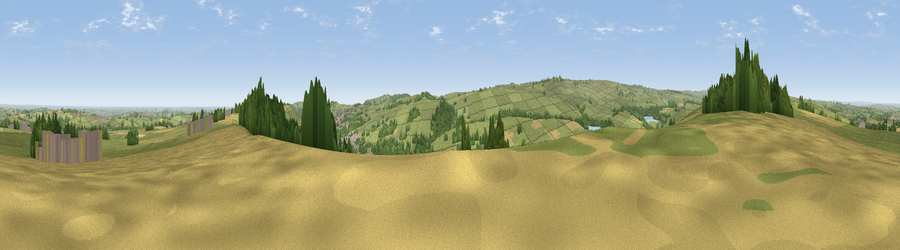

Viewpoint near Midhopestones
#7263 in England · top 6% of its area beats it · near MidhopestonesThe view, rendered

A 360° render of this exact spot computed from the terrain model, tree cover and land cover — summer colours, afternoon light, calibrated against photographs of famous viewpoints. Real trees, hedges and buildings will differ in detail.
The panorama
Grey silhouette: terrain skyline in each direction (720 bearings, Earth curvature and refraction included). Dashed green: skyline with trees (+15 m) and buildings (+8 m) as obstacles. Blue strip: how far the ground is visible on each bearing.
Where the view opens
Wedge length = distance to the farthest visible ground on that bearing (vegetation-aware). Rings at 10, 25 and 50 km.
What fills the view
66% grassland · 17% woodland · 10% cropland · 4% built-up · 3% water
Angular shares of the visible panorama (visual magnitude), not map area. Landscape diversity 0.45 (0–1 Shannon).
Key numbers
More beautiful places nearby
The staircase of upgrades: each row has a higher view potential than everything closer. Driving times are estimates from straight-line distance, calibrated against real road routing — check an actual route before setting out.
| Place | Direction | Drive | Score |
|---|---|---|---|
| Viewpoint near Stocksbridge | ESE · 3 km | ~7 min | 73.1 |
| Viewpoint near Wharncliffe Side | ESE · 8 km | ~16 min | 75.0 |
| Viewpoint near Wharncliffe Side | ESE · 8 km | ~17 min | 75.2 |
| Viewpoint near Greenfield | W · 24 km | ~39 min | 76.0 |
| Viewpoint near Carrbrook | W · 25 km | ~41 min | 77.1 |
| Viewpoint near Otley | N · 44 km | ~64 min | 77.5 |
| Viewpoint near Mow Cop | SW · 57 km | ~79 min | 78.9 |
| Viewpoint near Mow Cop | SW · 58 km | ~80 min | 80.2 |
53.50245, -1.63776 · source: screening · position refined by local search. Computed location — check access rights before visiting.